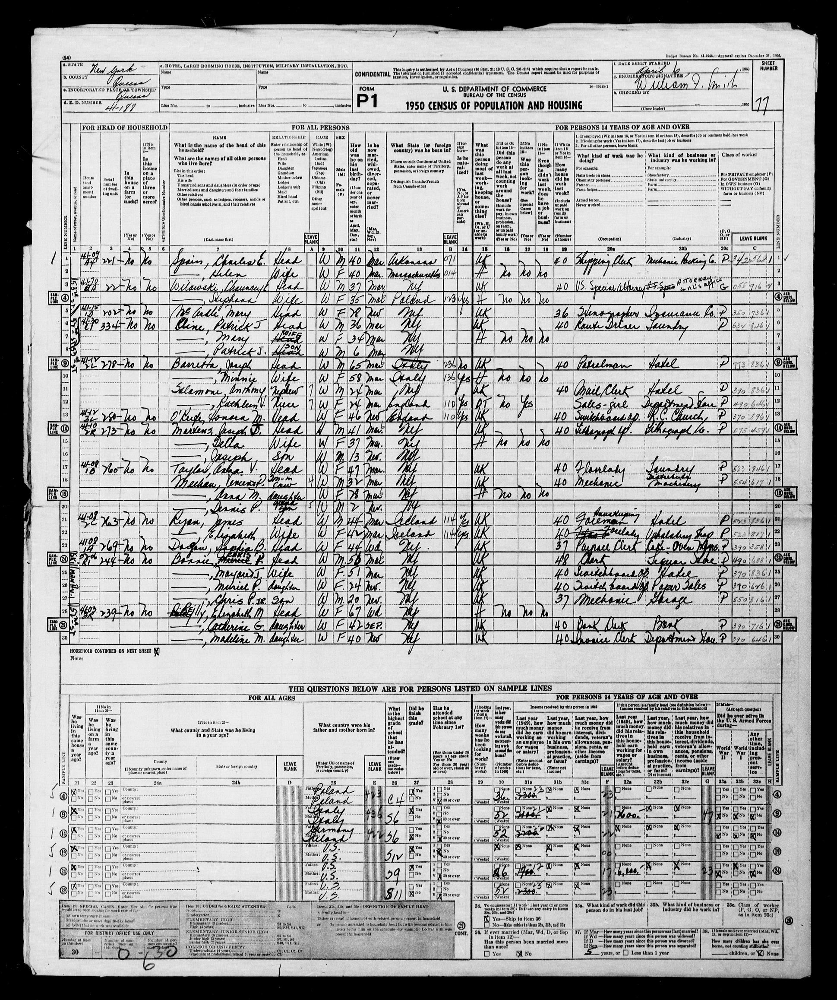

Jessie Delia Knight

Extract from the 1940 census of Queens, New York. The pertinent information begins on line 4.
The census indicates that Joseph Martins (sic), age 30, was the head of a household that include his wife, Delia, age 26, his daughter Jessie, age 10, and his son Joseph Jr., age 3.

Extract from the 1950 census of Queens, New York. The pertinent information begins on line 14.
The census indicates that Joseph J. Martins (sic), age 41, was the head of a household that included his wife, Della (sic), age 37, and his son Joseph, age 13.